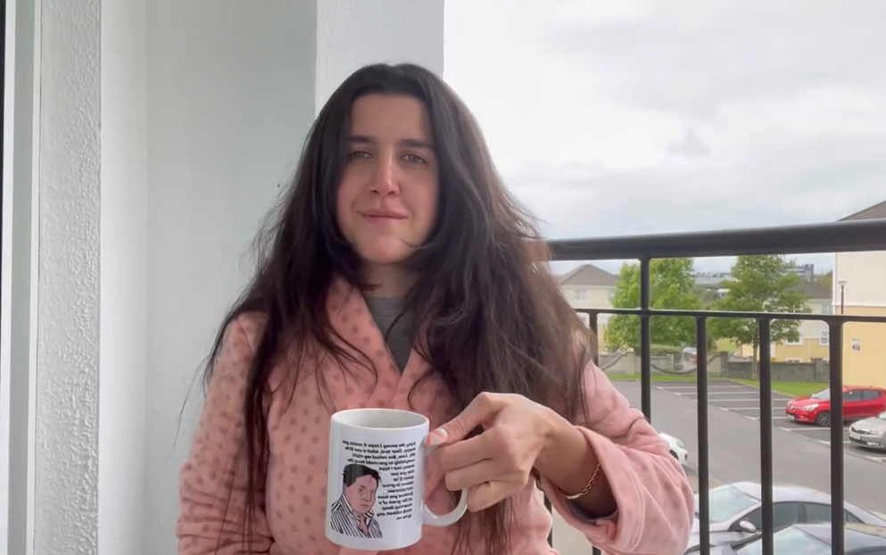

2 minutes
İyi Doğdun, Yeniden!

Sevgili Ezgi, seni tanıdığımdan zamandan bu yana geçen her gün, o kadar şaşırttın ki beni.Seni tanıdıkça, dünyanın senin gibi iyi kalpli insanlar sayesinde döndüğünden bir kez daha emin oldum. Hatta sadece benim değil, farklı bir çok kişinin kalbine, yaşamına dokunduğundan eminim. (Not: Bu memorial site bile benim yaşamıma dokunmanın sadece küçük bir sonucu)
Sadece birlikte geçirdiğimiz zaman süresi dahilinde bile hangi zorlukları aştığına şahit oldum. Karakterinden, duruşundan, tutumundan hiç ödün vermeden tüm bu zorluklara nasıl göğüs gerdiğini gördüm. O hassas vücudun arkasında, o kadar güçlü atan bir kalp var ki, umuyorum hayatta hiçbir şey, seni yıkamayacak. Biliyorum çünkü, bazen arafta gibi hissetsen de, seni bu araftan çıkarak bir sürü güzel insana, en önemlisi inanca sahipsin.
Klişe hiçbir şey yazmak istememekle birlikte bu tür şeyleri yazmada iyi olduğumu da söyleyemiyorum. :) Anlattıklarımı sadece seni tanıyan, çok şanslı kişilerin anladığından eminim. O da bizim ayrıcalığımız olsun. ;)
Bu,belki de saçma siteyi, internet dediğimiz dehlizin en derinlerine salıyorum ki yıllar boyunca, belki de umutsuzluğa düşen bazı kişilere ilham olsun istiyorum. Yıllar sonra baktığımdızda, bu güçlü kızın nerelere çıktığını, hayatta istediği her şeyi elde ettiğini görmek istiyorum. Senin için ise eğlenceli küçük bir anı olsun istiyorum. :)
Şimdi bu sayfayı rastgele bulanlar için her şeyi anlamlı kılan o videoyu da buraya ekliyorum. (Abone olmayı unutmayın :P)
Ve Ezgi :)
-Lütfen 30.11.2023 tarihinde burayı bir daha kontrol et
30'u olur olmaz buraya baktığını görüyorum. :) O zaman sana asıl sürprizimi yapabilirim.
Bu sürprizin çıktısı sana göre olmayabilir. Bunu başta söylemem gerek. Belki de sana göredir, bilemiyorum. Ama lütfen bunu ortaya çıkarırken hissettiklerimi aktarayım.
Bu besteyi ortaya koymam yaklaşık 1 ayımı aldı. Çok sınırlı enstrümanlarla, uçsuz bucaksız duygularımı bu şarkıya yansıtmak zor ama bir o kadar da çok severek yaptığım bir şey oldu.
Bu şarkı, yalnızlığı en çok hissettiğim dönemde hayatıma dokunmanın bende bıraktığı izleri taşıyor. Hemen hemen her buluşmamız sonrasında eve gelip bir notayı bu şarkıya işledim, nakış gibi. Senden sonra geldiğimde ne hissettiysem onu notalarda aradım. Bir ay kadar sonra artık oldgunlaştığını düşündüm. Dilersen kısaca biraz öyküsünden bahsedeyim. Şarkı sakin bir ritim ile başlıyor, tıpkı seninle ilk tanıştığım zamanları temsil ettiği gibi. Daha sonra karanlık bir tünelin ucundaki ışığı gördüğüm, o mutluluğu temsil eden kısımlara geliyoruz. Bu bölüm arkadaşlığından en keyif aldığım zamanları yansıtıyor, ki burada bir döngü notası kullandım. Yani kendini hep tekrar ediyor. Tıpkı arkadaşlığımızın da böyle bir döngüde sonsuza kadar sürmesini istediğim gibi. Şarkının en sonunda ise, sürekli olmasını temenni ettiğim, seninle birlikte olmanın zevkini vurgular bir ezgiyle bitiyor (bitmiyor aslında, şarkının sonuna yankı koydum ki uzanabildiği yere kadar uzansın, yayılsın...)
Şarkının ismi de benden sana hediye olsun. :)
Dilim sürtçtüyse affola, akademik yazı olmayınca pırıltım ancak bu kadarına yetti.:)
İyi ki tanımışım seni, iyi ki hayatımdasın.
Merve
242 Words
0001-01-01 00:00